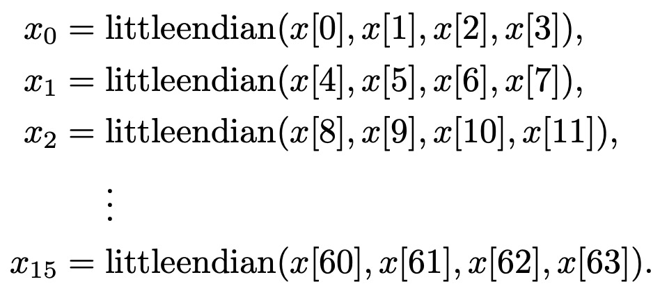

ReWire by Example
The ReWire functional high-level synthesis language (see below) is a functional language for designing, verifying, and implementing high assurance hardware.
- A hardware design in ReWire is also a Haskell program, and development of ReWire designs benefits from immediate feedback from its strong, static type system.
- As with Rust, ReWire's type system enforces invariants and guarantees at compile-time, thereby eliminating whole classes of bugs statically in a lightweight, automated manner.
- ReWire's type system can be extended by embedding designs into assurance tools (like Coq) to capture broad of automated checks and proof tools.
- ReWire designs can be compiled into Verilog and thereby interoperate with synthesis tools.
ReWire is not a replacement for commodity hardware design languages like Verilog but rather it is a value-add for hardware design, implementation, and verification that interoperates with them.
Chapter 0: Before You Start
These are the tutorial notes for the ReWire language.
Prerequisites
Haskell
There's no way of learning ReWire without knowing basic Haskell. I'm a Mac guy so I would use homebrew as in
brew install ghc. This will install the Glasgow Haskell Compiler.brew install stack. Stack is a tool for installing haskell packages. It really makes things easy (well, easier).
Installing ReWire
ReWire is freely available. Here is the repository where you find the most recent version: ReWire source. Follow the directions -- stack makes it easy.
- This installation will build the ReWire compiler
rwcand - Install libraries (aka
ReWire-user) that allow you to program in ReWire with the Haskell interpreterghci.
Monads in Haskell
You have to be comfortable with the basics of "monad wrangling". You don't need to understand them in any great depth, but understanding the following ought to do:
- The
Identitymonad; - the state monad; and
- the
Maybemonad.
Understanding the basic usage of the StateT monad transformer is important. It's a shame that they are known as "transformer" instead of "constructor", because all a monad transformer is is a way to construct monads in a canonical fashion.
Monads are a concept from Category Theory. I love Category Theory, really I do. But I'd strongly recommend avoiding categorical treatments of monads if this is your first time with this material. Rather, check out Graham Hutton or Miran Lipovaca's texts as they're both excellent.
Reactive Resumption Monads
These are a particular family of monads that can be used to precisely describe synchronous concurrency (e.g., like clocked computations in hardware). They sound scary, but they're not. Check out the following papers of mine for the basics if you want. I suspect a lot of readers will just look at its usage in ReWire and get them well enough.
These monads are implemented in the Hackage package monad-resumption.
Haskell
Here are some good sources:
- Programming in Haskell by Graham Hutton. This is an excellent, step-by-step introduction to Haskell. Graham also has a lot of online resources (slides, videos, etc.) to go along with the book.
- Learn You a Haskell for Good by Miran Lipovaca. Highly amusing and informative; available here.
- A Gentle Introduction to Haskell by Hudak, Peterson, and Fasal. Available at http://www.haskell.org/tutorial/.
- Real World Haskell by Bryan O'Sullivan. Also available online (I believe).
- Google.
- Haskell for Grownups. These are some slides (HaskellForGrownups.pdf) I've presented here and there over the years as a quick intro to Haskell and what all the fuss is about.
Monad Wrangling 101
ReWire is a monadic language, meaning that it is organized in terms of various monads (which ones, we'll get to shortly). There are about a zillion tutorials on monads out there, and most of them are just terrible. This is a shame since the idea of a monad itself is really beautiful and, if you know how to use them correctly, they're a really important part of functional programming practice. And, furthermore, they are a really important part of programming language semantics, too, and consequently an important part of formal methods properly understood.
What this section does is introduce the monad idea through a sequence of simple language interpreters. As we add features to the language, we have to change the monad we use to define the new interpreter. We will see four interpreters whose core is a language of simple arithmetic expressions.
To see all of the monads discussed in this tutorial defined in one convenient Haskell file, download this: MonadWrangling.hs. These monad and monad transformer definitions are in the style of earlier versions of GHC, which were immensely easier to understand than the current mess.
Simple Arithmetic Expressions
The first interpreter, found in Arith.hs, defines a language Exp that has integer constants, negation, and addition. These correspond to the constructors Const, Neg, and Add of the Exp data type. The interpreter eval0 does not use a monad and should be fairly self-explanatory.
module Arith where
data Exp = Const Int | Neg Exp | Add Exp Exp
instance Show Exp where
show (Const i) = show i
show (Neg e) = "-" ++ show e
show (Add e1 e2) = show e1 ++ " + " ++ show e2
eval0 :: Exp -> Int
eval0 (Const i) = i
eval0 (Neg e) = - (eval0 e)
eval0 (Add e1 e2) = eval0 e1 + eval0 e2
c = Const 99
n = Neg c
a = Add c n
Loading this into GHCi gives you what you'd expect:
λ> a
99 + -99
λ> eval0 a
0
The Identity Monad is a Big Nothingburger
We introduce now the Identity monad, which doesn't really give you anything at all. I introduce it first because it uses Haskell's built-in monad syntax, and it's useful to meet that syntax first when the monad is just a big nothing. The code for this section is found in IdentityMonad.hs and IdentityMonadDo.hs.
First, here's the new interpreter eval1. The salient point is that eval0 and eval1 are doing the same thing, but what's all this return and >>= business? (They're explained below if you want to skip ahead.)
module IdentityMonad where
import Control.Monad.Identity -- this is new.
data Exp = Const Int | Neg Exp | Add Exp Exp
instance Show Exp where
show (Const i) = show i
show (Neg e) = "-" ++ show e
show (Add e1 e2) = show e1 ++ " + " ++ show e2
eval1 :: Exp -> Identity Int
eval1 (Const i) = return i
eval1 (Neg e) = eval1 e >>= \ v -> return (- v)
eval1 (Add e1 e2) = eval1 e1 >>= \ v1 -> eval1 e2 >>= \ v2 -> return (v1 + v2)
c = Const 99
n = Neg c
a = Add c n
The Identity monad has the following definition (it's actually a simplification).
data Identity a = Identity a -- apologies for overloading the constructors.
return :: a -> Identity a
return v = Identity v
(>>=) :: Identity a -> (a -> Identity b) -> Identity b
(Identity v) >>= f = f v
So, return just injects its argument into Identity. The operation >>= (a.k.a., "bind") boils down to a backwards apply. It's just a whole lot of applying and pattern-matching on the Identity constructor, signifying nothing. When you load all this into GHCi, you get just what you'd expect:
λ> a
99 + -99
λ> eval1 a
Identity 0
λ>
Lessons Learned
As people say, eval1 and eval0 are morally equivalent, in the sense that, if you were so inclined, you could prove the equality eval1 a = Identity (eval0 a) holds for any a.
Monadic Syntactic Sugar or Saccharine?
Haskell overloads its monad syntax, so when we see the >>= and return again, they will be typed in different monads than Identity. Overloading is great for some uses, because it removes clutter. I find for formal methods it can be kind of confusing. So, reader beware!
There is also another shorthand for >>= that is frequently used called do notation; it's defined as:
x >>= f = do
v <- x
f v
So, the clause of eval1 for Neg is as follows when written in do notation:
eval1 (Neg e) = do
v <- eval1 e
return (- v)
The code IdentityMonadDo.hs just reformulates the code in IdentityMonad.hs using do notation.
2nd Interpreter: Errors and Maybe
The code for this section is found in Errors.hs. This new interpreter adds a new arithmetic operation Div. I pasted in the eval0 with a new case for Div.
module Errors where
data Exp = Const Int | Neg Exp | Add Exp Exp
| Div Exp Exp -- new
instance Show Exp where
show (Const i) = show i
show (Neg e) = "-" ++ show e
show (Add e1 e2) = show e1 ++ " + " ++ show e2
show (Div e1 e2) = show e1 ++ " / " ++ show e2
-- | Same as before, but with a new case
eval0 :: Exp -> Int
eval0 (Const i) = i
eval0 (Neg e) = - (eval0 e)
eval0 (Add e1 e2) = eval0 e1 + eval0 e2
eval0 (Div e1 e2) = eval0 e1 `div` eval0 e2 -- new
a = Add c (Neg c)
where
c = Const 99
uhoh = Div (Const 1) (Const 0) -- new
Note that, when you run the Div-extended version of eval0, things don't always end well:
λ> uhoh
1 / 0
λ> eval0 uhoh
*** Exception: divide by zero
λ>
Why can't we just check for 0?
Think about it this way, what should I replace ???? with below? There's no way of handling that exceptional case and it crashes the program.
eval0 (Div e1 e2) = if v2 == 0 then ???? else eval0 e1 `div` v2
where
v2 = eval0 e2
But with the Maybe monad, we can use its Nothing constructor for this erroneous case; recall the definition of the Maybe data type:
data Maybe a = Nothing | Just a
Here's the definition of eval2 whhich is typed in the Maybe monad:
eval2 :: Exp -> Maybe Int -- N.b., the new type
eval2 (Const i) = return i
eval2 (Neg e) = do
v <- eval2 e
return (- v)
eval2 (Add e1 e2) = do
v1 <- eval2 e1
v2 <- eval2 e2
return (v1 + v2)
eval2 (Div e1 e2) = do
v1 <- eval2 e1
v2 <- eval2 e2
if v2==0 then Nothing else return (v1 `div` v2) -- fill in ???? with Nothing
λ> uhoh
1 / 0
λ> eval2 uhoh
Nothing
Maybe Under the Hood
Below is the definition of the Maybe monad. The way to think of a computation x >>= f is that, if x is returns some value (i.e., it's Just v), then just proceed normally. If an exception is thrown by computing x (i.e., it's Nothing), then the whole computation x >>= f
data Maybe a = Nothing | Just a
return :: a -> Maybe a
return v = Just v
(>>=) :: Maybe a -> (a -> Maybe b) -> Maybe b
(Just v) >>= f = f v
Nothing >>= f = Nothing
3rd Interpreter: Adding a Register
The code for this section is Register.hs.
module Register where
import Control.Monad.State
data Exp = Const Int | Neg Exp | Add Exp Exp
| X -- new register X
instance Show Exp where
show (Const i) = show i
show (Neg e) = "-" ++ show e
show (Add e1 e2) = show e1 ++ " + " ++ show e2
show X = "X"
-- | Just a copy
eval2 :: Exp -> Maybe Int
eval2 (Const i) = return i
eval2 (Neg e) = do
v <- eval2 e
return (- v)
eval2 (Add e1 e2) = do
v1 <- eval2 e1
v2 <- eval2 e2
return (v1 + v2)
eval2 X = undefined -- How do we do handle this?
Here's how we handle this:
- Create a new monad from
Identitywith anIntregister:StateT Int Identity - This new monad has two operations
getthat reads the current value of the registerputthat updates the value of the register
StateT Intis known as a monad transformer
The code below does just that
readX :: StateT Int Identity Int
readX = get
eval3 :: Exp -> StateT Int Identity Int
eval3 (Const i) = return i
eval3 (Neg e) = do
v <- eval3 e
return (- v)
eval3 (Add e1 e2) = do
v1 <- eval3 e1
v2 <- eval3 e2
return (v1 + v2)
eval3 X = readX
4th: Errors + Register
The code for this is RegisterError.hs. In this example, we want to add both a possibly error-producing computation along with the register. This is done mostly through monadic means.
module Register where
import Control.Monad.State
data Exp = Const Int | Neg Exp | Add Exp Exp
| Div Exp Exp -- Both errors
| X -- and a register X
instance Show Exp where
show (Const i) = show i
show (Neg e) = "-" ++ show e
show (Add e1 e2) = show e1 ++ " + " ++ show e2
show (Div e1 e2) = show e1 ++ " / " ++ show e2
show X = "X"
Here's how we handle this:
- Create a new monad from
Maybewith anIntregister:StateT Int Maybe - This new monad has two operations
getthat reads the current value of the registerputthat updates the value of the register
StateT Intis known as a monad transformer
The code below does just that
readX :: StateT Int Maybe Int
readX = get
eval3 :: Exp -> StateT Int Maybe Int
eval3 (Const i) = return i
eval3 (Neg e) = do
v <- eval3 e
return (- v)
eval3 (Add e1 e2) = do
v1 <- eval3 e1
v2 <- eval3 e2
return (v1 + v2)
eval3 (Div e1 e2) = do
v1 <- eval3 e1
v2 <- eval3 e2
if v2==0 then lift Nothing else return (v1 `div` v2)
-- N.b., this is new.
eval3 X = readX
Hello Worlds
This first chapter introduces ReWire and collects the simplest possible examples.
What is ReWire?
ReWire is a domain-specific language embedded in the Haskell functional programming language (https://haskell.org). Every ReWire program is a Haskell program that can be executed just as any other Haskell program. This fact is simple and also very powerful, because it means that development of a hardware design can proceed incrementally, one function at a time, with the resulting new code being type-checked and/or tested. Once a developer is satisfied with their ReWire design, they can compile it automatically into synthesizable HDLs (hardware definition languages) like Verilog, VHDL, and FIRRTL.

Mealy Machines and ReWire types
There's a mental model of digital circuitry used by hardware designers known as a Mealy machine. The flavor favored by hardware designers is portrayed below, which will seem odd to those of us who first heard of them from a class in theoretical computer science (e.g., https://en.wikipedia.org/wiki/Mealy_machine). Mealy machines are finite state machines combined with a clock that on each clock "tick" consume an input of type i, update a store of type s, and produce an output of type o.
In ReWire, there is a type corresponding to the Mealy machine above, the monadic type:
ReacT i o (StateT s Identity) ()
And, because it occurs so frequently, we refer to it as a device type some times. Things of this type are those that can be compiled to hardware.
Simple Mealy
The "theoretical computer science" picture of a Mealy machine is seen below:

Here si is the start state, and there are two other states, s0 and s1. There is also an alphabet consisting of 0 and 1. On the transitions, a red digit denotes an input and a blue digit denotes an output, so, in the machine is currently in state si and receives a 1 as input, it outputs a 0 and proceeds to state s1.
The ReWire code described in the section is found here, SimpleMealy.hs, and what follows is a line-by-line description.
First thing is to import a library with ReWire definitions, etc. What's DataKinds? Don't worry about it for now. Collected in a comment is a tabular form of the state transitions.
{-# LANGUAGE DataKinds #-}
import ReWire
-- Current State | Input | Output | Next State
-- --------------------------------------------
-- si 0 0 s0
-- si 1 0 s1
-- s0 0 0 s0
-- s0 1 1 s1
-- s1 0 1 s0
-- s1 1 0 s1
Next, let's define the alphabet:
data Alphabet = Zero | One
Alphabet defines both the inputs and outputs of this Mealy machine.
Each of the three states and their transitions are defined in the following. Before focusing on the type, note first how each line below corresponds directly to a line in the table above. E.g., if the machine is in state si and receives 0 as input, it produces output 0, and proceeds to state s0.
si , s0 , s1 :: Alphabet -> ReacT Alphabet Alphabet Identity ()
si Zero = signal Zero >>= s0
si One = signal Zero >>= s1
s0 Zero = signal Zero >>= s0
s0 One = signal One >>= s1
s1 Zero = signal One >>= s0
s1 One = signal Zero >>= s1
We'll return to the types of si, s0, and s1 momentarily.
Finally, we need to designate a start state, just as with any state machine definition.
start :: ReacT Alphabet Alphabet Identity ()
start = signal Zero >>= si
Why this type ReacT Alphabet Alphabet Identity ()?
We know the type will have the form ReacT i o m a for some types i, o, and a and monad m.
- The input alphabet is
Alphabet, soiisAlphabet. - The output alphabet is
Alphabet, soois alsoAlphabet. - We are not using internal storage like registers, so monad
mcan be justIdentity.
Finally, why () for return type a? Here, we have a choice, but it doesn't matter in the least what we pick. Because start never, ever, terminates under any circumstances, it won't ever return any value, so we may as well pick ().
This non-termination requirement on start is important and makes complete sense if you think about it. Hardware never terminates (unless it's unplugged).
The Obligatory Fibonacci Example
The following Haskell code (the file is called Fib.hs) creates an infinite list of Ints in a conventional manner using the fibgen function.
module Fibonacci where
fibs :: [Int]
fibs = fibgen 0 1
where
fibgen :: Int -> Int -> [Int]
fibgen n m = n : fibgen m (n + m)
Loading Fib.hs into GHCi, you can see that it calculates the familiar Fibonacci sequence:
ghci> take 10 fibs
take 10 fibs
[0,1,1,2,3,5,8,13,21,34]
Making Hardware Out of This.
In the ReWire code below, fibdev plays the same role as fibgen above. For the moment, just ignore the monadic type, ReacT Bit (W 8) Identity (). (I'll explain its significance shortly.) Instead of using Haskell's Int type, we will compute over eight bit words (i.e., W 8). There is also a definition of start, which is a special symbol that unsurprisingly specifies how to start the device.
What fibdev does is, given two words n and m, it puts n on the output port using signal and accepts a new input b off of the input port. If bit b is 1, then it continues on. However, if b is 0, then it calls itself on m and m + n just like fibgen above.
{-# LANGUAGE DataKinds #-}
import Prelude hiding ((+))
import ReWire
import ReWire.Bits
start :: ReacT Bit (W 8) Identity ()
start = fibdev (lit 0) (lit 1)
fibdev :: W 8 -> W 8 -> ReacT Bit (W 8) Identity ()
fibdev n m = do b <- signal n
if b then fibdev n m else fibdev m (n + m)
Lessons Learned.
There are some lessons to be learned from this example.
- Just like a state machine, every ReWire device has to have a
start. - Most ReWire programs will begin with something like the top three lines of the previous ReWire code.
- There may be Haskell
Preludeoperations that have a particular meaning in ReWire (e.g.,+), and so they may need to be hidden explicitly. - The other parts of that incantation is performed to use built-in words and their operations.
- There may be Haskell
Carry Save Addition
There are three carry-save adders in the tutorial, CSA.hs, SCSA.hs, and PCSA.hs, and the first of these is explained in detail below.
Carry save addition (https://en.wikipedia.org/wiki/Carry-save_adder) is defined as function f:
f :: W 8 -> W 8 -> W 8 -> (W 8, W 8)
f a b c = ( ((a .&. b) .|. (a .&. c) .|. (b .&. c) ) <<. lit 1 , (a ^ b) ^ c )
Here, I define f using ReWire's built-in word constructor, picking W 8 for the sake of concreteness.
I'll define a few constants for convenience in a running example.
_40 , _25 , _20 , _41 , _0 :: W 8
_40 = lit 40
_25 = lit 25
_20 = lit 20
_41 = lit 41
_0 = lit 0
Using GHCi, we can test it out, like any Haskell function:
λ> :t f
f :: W 8 -> W 8 -> W 8 -> (W 8, W 8)
λ> f _40 _25 _20
(Vector [False,False,True,True,False,False,False,False],Vector [False,False,True,False,False,True,False,True])
What's this mess? W 8 values are represented internally using Haskell's Data.Vector library and, well, it ain't pretty. There is a ReWire library you can import to make all this more palatable called ReWire.Interactive:
λ> pretty (f _40 _25 _20)
(48,37)
λ> pretty (f _41 _25 _20)
(50,36)
λ>
Making a basic carry save adder
-- |
-- | Example 1. CSA
-- |
-- | The only thing this does is take its inputs i, computes csa on them, and
-- | output the results every clock cycle.
csa :: (W 8, W 8, W 8) -> ReacT (W 8, W 8, W 8) (W 8, W 8) Identity ()
csa (a, b, c) = do
abc' <- signal (f a b c)
csa abc'
start :: ReacT (W 8, W 8, W 8) (W 8, W 8) Identity ()
start = csa (_0, _0, _0)
First, csa consumes its three inputs a, b, and c as a tuple. Then, it computes the carry save addition on these and puts the result on the output port, signal (f a b c). Finally, it obtains the next inputs, abc' and continues.
What does the type of csa mean? It's worth contemplating the type of csa's codomain, which is ReacT (W 8, W 8, W 8) (W 8, W 8) Identity ().
- The input type is
(W 8, W 8, W 8), meaning that every it takes threeW 8s each clock cycle; - The output type is
(W 8, W 8), meaning that every it produces twoW 8s each clock cycle; and - It does not use any internal storage or registers, hence the
Identitymonad is used rather than a state monad.
Running it in GHCi
You can run this using pretty and runP from ReWire.Interactive. First, define some inputs that look familiar:
inputs :: [(W 8 , W 8 , W 8)]
inputs = (_40 , _25 , _20)
: (_41 , _25 , _20)
: (_40 , _25 , _20) : []
λ> :t pretty
pretty :: Pretty a => a -> IO ()
λ> pretty $ runP start ((_0 , _0 , _0) , (_0 , _0 )) inputs
((0,0,0),(0,0)) :> ((40,25,20),(0,0)) :> ((41,25,20),(48,37)) :> ((40,25,20),(50,36)) :+> Nothing
(WARNING: ReWire.Interactive is currently in super-king-kong-major-hacky form right now.)
Compiling it with RWC
First, here's the entire file as it stands:
{-# LANGUAGE DataKinds #-}
import Prelude hiding ((^))
import ReWire
import ReWire.Bits
-- | ReWire compiler will complain if this is imported
import ReWire.Interactive
f :: W 8 -> W 8 -> W 8 -> (W 8, W 8)
f a b c = ( ((a .&. b) .|. (a .&. c) .|. (b .&. c) ) <<. lit 1 , (a ^ b) ^ c )
-- Constants for a running example.
_40 , _25 , _20 , _41 , _0 :: W 8
_40 = lit 40
_25 = lit 25
_20 = lit 20
_41 = lit 41
_0 = lit 0
-- |
-- | Example 1. CSA
-- |
-- | The only thing this does is take its inputs i, computes csa on them, and
-- | output the results every clock cycle.
csa :: (W 8, W 8, W 8) -> ReacT (W 8, W 8, W 8) (W 8, W 8) Identity ()
csa (a, b, c) = do
abc' <- signal (f a b c)
csa abc'
start :: ReacT (W 8, W 8, W 8) (W 8, W 8) Identity ()
start = csa (_0, _0, _0)
-- | ReWire compiler will complain if this is here (i.e., comment it before compiling):
inputs :: [(W 8 , W 8 , W 8)]
inputs = (_40 , _25 , _20)
: (_41 , _25 , _20)
: (_40 , _25 , _20) : []
Pro-tip. Because ReWire doesn't know about things likes lists, ReWire.Interactive and the definition of inputs need to be commented out before compiling with rwc. Otherwise, you will receive a non-informative error message like this:
$ rwc CSA.hs --verilog
Control/Monad/Identity.hs:
Error: File not found in load-path
$
Assuming these are now commented out, you can proceed to compile CSA.hs with:
$ ls -l CSA.*
-rw-r--r-- 1 william.harrison staff 1039 Jun 13 09:02 CSA.hs
$ rwc CSA.hs --verilog
$ ls -l CSA.*
-rw-r--r-- 1 william.harrison staff 1039 Jun 13 09:02 CSA.hs
-rw-r--r-- 1 william.harrison staff 2159 Jun 13 09:04 CSA.v
$
Salsa20 Case Study
This document presents a case study in constructing verified cryptographic hardware in ReWire. In it, I follow the Daniel Bernstein's Salsa20 specification: https://cr.yp.to/snuffle/spec.pdf. Throughout this tutorial, I'll refer to this document (i.e., the PDF I just linked to) as either the Salsa20 specification or simply the "spec". Page and section numbers will refer to that document.
The source code for this example can be found here https://github.com/harrisonwl/rwcrypto under src/salsa20. The original version of the ReWire design here was presented at FPT 2015 (linked to below). ReWire's syntax has evolved since then, but the case study here follows that paper.
Generally speaking, when you're going to prove the correctness of a hardware design (or anything else fo that matter really), you need to have:
- a rigorous standard that constitutes a definition of what to be correct means;
- a precise definition of what the implementation and/or design does; and
- some mathematical relationship between (1.) and (2.) that you will demonstrate or prove.
The standard in (1.) we will call the reference semantics and, for the Salsa20 case study, the reference semantics is discussed in the first subsection. The reference semantics is effectively a Haskell/ReWire rendering of the pseudocode functions given in the text of Bernstein's specification. Our reference semantics is also executable -- e.g., you can load it into GHCi, type-check it, and run test cases.
The second subsection describes (2.); that is, the actual ReWire code that can be both compiled to Verilog and reasoned about with formal tools. The first implementation we present is designed for simplicity rather than performance. The third subsection describes (3.) at a very high, somewhat informal level. The purpose of this entire tutorial is to focus on ReWire programming.
Recent Relevant Publications
A more technical presentation can be found in these recent publications:
- Temporal Staging for Correct-by-Construction Cryptographic Hardware., Yakir Forman and Bill Harrison. Proceedings of the 2024 Rapid Systems Prototyping (RSP24). pdf
- Formalized High Level Synthesis with Applications to Cryptographic Hardware., Bill Harrison, Ian Blumenfeld, Eric Bond, Chris Hathhorn, Paul Li, May Torrence, and Jared Ziegler. Proceedings of the 2023 NASA Formal Methods Symposium (NFM23). pdf
- Provably Correct Development of Reconfigurable Designs via Equational Reasoning., Ian Graves, Adam Procter, Bill Harrison, and Gerry Allwein. Proceedings of the 2015 International Conference on Field-Programmable Technology (FPT), pdf
Reference Semantics
This section introduces the reference semantics for Salsa20 written in Haskell/ReWire. The development follows Bernstein's specification closely, including a section here corresponding to each one in his specification. The result is an executable, type-checked version of Salsa20 in Haskell/ReWire.
With this Salsa20 reference semantics, we can define a test function (encryptS20 :: String -> String below) that encrypts a message with the same key. Running encryptS20 twice on the same plaintext message should, and does, return the original plaintext. For example, consider the following GHCi output where we first print the message and then run the test function on it twice:
λ> putStrLn godzilla_haiku
With artillery
You greet your nuclear child
Am I the monster?
λ> putStrLn (encryptS20 . encryptS20 $ godzilla_haiku)
With artillery
You greet your nuclear child
Am I the monster?
Why do you keep saying Haskell/ReWire?
ReWire is a domain-specific language embedded in Haskell---i.e., every ReWire design is a legal Haskell program but the converse does not hold. When I say Haskell/ReWire, I mean a Haskell program that makes use of ReWire constructs (e.g., bit vectors) but that, for one reason or another, is not legal ReWire. A frequently used Haskell feature that is not inherited by ReWire currently is the type class system. More fundamental is the restrictions on recursion. However, it is often helpful while developing and testing ReWire designs to have access to Haskell's full power.
Aside on ReWire's Limits on Recursion
Functional recursion is limited to functions with codomains typed in ReacT. E.g., recall the carry-save adder example from the previous chapter:
csa :: (W 8, W 8, W 8) -> ReacT (W 8, W 8, W 8) (W 8, W 8) Identity ()
Similarly, data recursion (e.g., lists) is not allowed in ReWire because hardware data structures are necessarily finite.
Arbitrary recursion for functions and data requires unbounded storage like heaps and stacks to implement and that is incompatible with hardware's fixed, finite storage footprint.
Introduction
The reference semantics culminates in the definition of a Salsa20 encryption function of the following type:
encrypt :: Hex (W 8) -> Hex (W 8) -> Oct (W 8) -> W 64 -> W 8 -> W 8
What exactly this means will be apparent as you read the reference semantics subsection, but it is simply a Haskell transliteration of the function defined in Section 10 of Bernstein's specification; along the way, I recommend that you keep a copy of his spec handy throughout. At first, you will find that our definitions correspond very closely to his. Towards the end of his spec, I think you will find our reference semantics much easier to understand.
Words
These definitions below can be found in Basic.hs.
A word in the context of Bernstein's Salsa20 specification is a bit vector of size 32. Representing bit vectors in ReWire is done via the built-in type constructor for words, W. It is size-indexed so that, for example, 32-bit words are represented by W 32. There are a host of operators defined for words parameterized by size. For example, the type of addition on words has type (checking its type in the GHCi interpreter):
λ> :type (+)
(+) :: KnownNat n => W n -> W n -> W n
This means that, for any natural number n, (+) takes two (W n) and returns a (W n).
Most bit-vector operations in Verilog or VHDL have a corresponding operation in ReWire.
The Basic Usage TL;DR
The first lines of code for the Salsa20 quarterround function are below and illustrate how to load the built-in bit-vector types and operations in ReWire.
{-# LANGUAGE DataKinds #-} -- 1
module QuarterRound(quarterround) where
import Prelude hiding ((+) , (^)) -- 2
import ReWire -- 3
import ReWire.Bits (lit , rotL , (^) , (+)) -- 4
To use the built-in bit vector type, one must simply include import ReWire (line 3) and also the language directive (1). To use specific operations, one can include them from ReWire.Bits (line 4) and some of these operations have the same name as Haskell Prelude operations, so one can exclude these as in line 2.
Some additional type constructors for Salsa20
Some additional type constructors used in this specification are included below. We could use Haskell built-in tuple types for these, but it is useful for various technical reasons to define our own larger vector types instead (e.g., it makes pretty-printing values as we wish easier). It's not important to understand the precise details, however.
data X16 a = X16 a a a a a a a a a a a a a a a a
type Quad a = (a , a , a , a)
type Oct a = (a , a , a , a , a , a , a , a)
type Hex a = X16 a
data X64 a = X64 a a a a a a a a a a a a a a a a
a a a a a a a a a a a a a a a a
a a a a a a a a a a a a a a a a
a a a a a a a a a a a a a a a a
These definitions can be found in Basic.hs.
The Quarter Round Function
The definitions below can be found in QuarterRound.hs and the testing code can be found in Test_QuarterRound.hs.
Looking at the pseudocode functions defined in the spec, it is clear that they are, indeed, pure functions in the same sense as Haskell. Hence, it is quite straightforward to transliterate these functions into Haskell/ReWire and this section gives the first such transliteration. An advantage of writing in Haskell rather than pseudocode is that definitions may are type-checked by GHC, providing a quick means of gaining assurance and/or finding stupid bugs.
Inputs and Outputs
The quarterround function takes a 4-word sequence as input and produces a 4-word sequence as output. We represent these 4-word sequences as a 4-tuple in Haskell and each word as a W 32. That means that the type of the function will be:
quarterround :: (W 32 , W 32 , W 32 , W 32) -> (W 32 , W 32 , W 32 , W 32)
Definition
The quarterround function from page 2 of the spec is given as:

Rendering this function in Haskell is simple:
quarterround :: (W 32 , W 32 , W 32 , W 32) -> (W 32 , W 32 , W 32 , W 32)
quarterround (y0 , y1 , y2 , y3) = (z0 , z1 , z2 , z3)
where
z0 , z1 , z2 , z3 :: W 32
z1 = y1 ^ rotL (lit 7) (y0 + y3)
z2 = y2 ^ rotL (lit 9) (z1 + y0)
z3 = y3 ^ rotL (lit 13) (z2 + z1)
z0 = y0 ^ rotL (lit 18) (z3 + z2)
Note how closely the Haskell text mirrors the definition from the spec text. The XOR operation (\(\oplus\)) is written as ^, the left rotate \(\lll\) is written as rotL, etc.
Examples
Bernstein provides examples that one can use to sanity-check definitions of quarterround; here they are:
Because we have the function using Haskell/ReWire, we can just evaluate these tests automatically; here are the seven tests from the spec:
alltests :: [Bool]
alltests = [test1 , test2 , test3 , test4 , test5 , test6 , test7]
test1 , test2 , test3 , test4 , test5 , test6 , test7 :: Bool
test1 = quarterround (lit 0x00000000 , lit 0x00000000 , lit 0x00000000 , lit 0x00000000)
== (lit 0x00000000 , lit 0x00000000 , lit 0x00000000 , lit 0x00000000)
test2 = quarterround (lit 0x00000001 , lit 0x00000000 , lit 0x00000000 , lit 0x00000000)
== (lit 0x08008145 , lit 0x00000080 , lit 0x00010200 , lit 0x20500000)
test3 = quarterround (lit 0x00000000 , lit 0x00000001 , lit 0x00000000 , lit 0x00000000)
== (lit 0x88000100 , lit 0x00000001 , lit 0x00000200 , lit 0x00402000)
test4 = quarterround (lit 0x00000000 , lit 0x00000000 , lit 0x00000001 , lit 0x00000000)
== (lit 0x80040000 , lit 0x00000000 , lit 0x00000001 , lit 0x00002000)
test5 = quarterround (lit 0x00000000 , lit 0x00000000 , lit 0x00000000 , lit 0x00000001)
== (lit 0x00048044 , lit 0x00000080 , lit 0x00010000 , lit 0x20100001)
test6 = quarterround (lit 0xe7e8c006 , lit 0xc4f9417d , lit 0x6479b4b2 , lit 0x68c67137)
== (lit 0xe876d72b , lit 0x9361dfd5 , lit 0xf1460244 , lit 0x948541a3)
test7 = quarterround (lit 0xd3917c5b , lit 0x55f1c407 , lit 0x52a58a7a , lit 0x8f887a3b)
== (lit 0x3e2f308c , lit 0xd90a8f36 , lit 0x6ab2a923 , lit 0x2883524c)
Now, each test is computed:
λ> alltests
[True,True,True,True,True,True,True]
The rowround Function
The definitions below can be found in RowRound.hs and the testing code can be found in Test_RowRound.hs.
Inputs and Outputs
The rowround function takes a 16-word sequence as input and produces a 16-word sequence as output, meaning that the function will have type:
rowround :: X16 (W 32) -> X16 (W 32)
where X16 is a vector type defined by:
data X16 a = X16 a a a a a a a a a a a a a a a a
We could have instead used either Haskell's built-in tuple or vector types defined by ReWire. But the advantage of the roll-your-own vector type X16 as we do is that it makes both pattern-matching and displaying values at the GHCi prompt. Exactly how and why is not important for understanding this reference semantics for Salsa20, but a Haskell aficionado will undoubtedly notice this choice.
Definition

Rendering in ReWire/Haskell
Rendered in Haskell, it is:
rowround :: X16 (W 32) -> X16 (W 32)
rowround (X16 y0 y1 y2 y3 y4 y5 y6 y7 y8 y9 y10 y11 y12 y13 y14 y15)
= X16 z0 z1 z2 z3 z4 z5 z6 z7 z8 z9 z10 z11 z12 z13 z14 z15
where
( z0, z1, z2, z3) = quarterround ( y0, y1, y2, y3)
( z5, z6, z7, z4) = quarterround ( y5, y6, y7, y4)
(z10, z11, z8, z9) = quarterround (y10, y11, y8, y9)
(z15, z12, z13, z14) = quarterround (y15, y12, y13, y14)
Examples
alltests :: [Bool]
alltests = [test1 , test2]
test1 , test2 :: Bool
test1 = rowround (x16
0x00000001 0x00000000 0x00000000 0x00000000
0x00000001 0x00000000 0x00000000 0x00000000
0x00000001 0x00000000 0x00000000 0x00000000
0x00000001 0x00000000 0x00000000 0x00000000)
== x16
0x08008145 0x00000080 0x00010200 0x20500000
0x20100001 0x00048044 0x00000080 0x00010000
0x00000001 0x00002000 0x80040000 0x00000000
0x00000001 0x00000200 0x00402000 0x88000100
test2 = rowround (x16
0x08521bd6 0x1fe88837 0xbb2aa576 0x3aa26365
0xc54c6a5b 0x2fc74c2f 0x6dd39cc3 0xda0a64f6
0x90a2f23d 0x067f95a6 0x06b35f61 0x41e4732e
0xe859c100 0xea4d84b7 0x0f619bff 0xbc6e965a )
== x16
0xa890d39d 0x65d71596 0xe9487daa 0xc8ca6a86
0x949d2192 0x764b7754 0xe408d9b9 0x7a41b4d1
0x3402e183 0x3c3af432 0x50669f96 0xd89ef0a8
0x0040ede5 0xb545fbce 0xd257ed4f 0x1818882d
λ> alltests
[True,True]
The columnround function
The definitions below can be found in ColumnRound.hs and the testing code can be found in Test_ColumnRound.hs.
Inputs and Outputs
If x is a 16-word sequence then columnround(x) is a 16-word sequence. Or, to put it in Haskell terms, the type of columnround is
columnround :: Hex (W 32) -> Hex (W 32)
Here, we're assuming:
type Hex a = X16 a
and that words are W 32.
Definition
The columnround function from page 4 of Bernstein's Salsa20 Specification is given as:

Rendering in ReWire/Haskell
columnround :: Hex (W 32) -> Hex (W 32)
columnround (X16 x0 x1 x2 x3 x4 x5 x6 x7 x8 x9 x10 x11 x12 x13 x14 x15)
= X16 y0 y1 y2 y3 y4 y5 y6 y7 y8 y9 y10 y11 y12 y13 y14 y15
where
y0, y1, y2, y3, y4, y5, y6, y7, y8, y9, y10, y13, y14, y15 :: W 32
( y0, y4, y8, y12) = quarterround (x0, x4, x8, x12)
( y5, y9, y13, y1) = quarterround (x5, x9, x13, x1)
(y10, y14, y2, y6) = quarterround (x10, x14, x2, x6)
(y15, y3, y7, y11) = quarterround (x15, x3, x7, x11)
Examples

alltests :: [Bool]
alltests = [test1 , test2]
test1 , test2 :: Bool
test1 = columnround (x16
0x00000001 0x00000000 0x00000000 0x00000000
0x00000001 0x00000000 0x00000000 0x00000000
0x00000001 0x00000000 0x00000000 0x00000000
0x00000001 0x00000000 0x00000000 0x00000000)
== x16
0x10090288 0x00000000 0x00000000 0x00000000
0x00000101 0x00000000 0x00000000 0x00000000
0x00020401 0x00000000 0x00000000 0x00000000
0x40a04001 0x00000000 0x00000000 0x00000000
test2 = columnround (x16
0x08521bd6 0x1fe88837 0xbb2aa576 0x3aa26365
0xc54c6a5b 0x2fc74c2f 0x6dd39cc3 0xda0a64f6
0x90a2f23d 0x067f95a6 0x06b35f61 0x41e4732e
0xe859c100 0xea4d84b7 0x0f619bff 0xbc6e965a)
== x16
0x8c9d190a 0xce8e4c90 0x1ef8e9d3 0x1326a71a
0x90a20123 0xead3c4f3 0x63a091a0 0xf0708d69
0x789b010c 0xd195a681 0xeb7d5504 0xa774135c
0x481c2027 0x53a8e4b5 0x4c1f89c5 0x3f78c9c8
And, as before, the tests are passed:
λ> alltests
[True,True]
The doubleround function
The definitions below can be found in DoubleRound.hs and the testing code can be found in Test_DoubleRound.hs.
Inputs and Outputs
To quote Bernstein: If x is a 16-word sequence then doubleround(x) is a 16-word sequence. So, its Haskell type is given as:
doubleround :: Hex (W 32) -> Hex (W 32)
Definition
The doubleround function from page 4 of Bernstein's Salsa20 Specification is given as:

Rendering in ReWire/Haskell
doubleround :: Hex (W 32) -> Hex (W 32)
doubleround = rowround . columnround
Examples
alltests :: [Bool]
alltests = [test1 , test2]
test1 , test2 :: Bool
test1 = doubleround i1 == o1
test2 = doubleround i2 == o2
i1 , o1 , i2 , o2 :: Hex (W 32)
i1 = x16
0x00000001 0x00000000 0x00000000 0x00000000
0x00000000 0x00000000 0x00000000 0x00000000
0x00000000 0x00000000 0x00000000 0x00000000
0x00000000 0x00000000 0x00000000 0x00000000
o1 = x16
0x8186a22d 0x0040a284 0x82479210 0x06929051
0x08000090 0x02402200 0x00004000 0x00800000
0x00010200 0x20400000 0x08008104 0x00000000
0x20500000 0xa0000040 0x0008180a 0x612a8020
i2 = x16
0xde501066 0x6f9eb8f7 0xe4fbbd9b 0x454e3f57
0xb75540d3 0x43e93a4c 0x3a6f2aa0 0x726d6b36
0x9243f484 0x9145d1e8 0x4fa9d247 0xdc8dee11
0x054bf545 0x254dd653 0xd9421b6d 0x67b276c1
o2 = x16
0xccaaf672 0x23d960f7 0x9153e63a 0xcd9a60d0
0x50440492 0xf07cad19 0xae344aa0 0xdf4cfdfc
0xca531c29 0x8e7943db 0xac1680cd 0xd503ca00
0xa74b2ad6 0xbc331c5c 0x1dda24c7 0xee928277
λ> alltests
[True,True]
The littleendian function
The definitions below can be found in LittleEndian.hs and the testing code can be found in Test_LittleEndian.hs.
Inputs and Outputs
To quote Bernstein: If b is a 4-byte sequence then littleendian(b) is a word, and, hence, its Haskell type is:
littleendian :: Quad (W 8) -> W 32 -- i.e., (W 8, W 8, W 8, W 8) -> W 32
Bernstein also notes that littleendian is invertible, meaning that the following function can be defined:
inv_littleendian :: W 32 -> Quad (W 8)
Definition

Rendering in ReWire/Haskell
Note that the (++) operator below is vector concatenation (rather than list append from the Haskell prelude). So, in the definition of littleendian below, four (W 8) bit vectors (i.e., b3, b2, b1, and b0) are concatenated to make a single (W 32).
revbytes :: Quad (W 8) -> Quad (W 8)
revbytes (b0,b1,b2,b3) = (b3,b2,b1,b0)
littleendian :: Quad (W 8) -> W 32
littleendian w8x4 = b3 ++ b2 ++ b1 ++ b0
where
b0 , b1 , b2 , b3 :: W 8
(b3 , b2 , b1 , b0) = revbytes w8x4
Bernstein also notes that littleendian is invertible:
inv_littleendian :: W 32 -> Quad (W 8)
inv_littleendian w = revbytes (slice0 w , slice1 w , slice2 w , slice3 w)
Here, the operation of the slice functions (slice0, etc.) is illustrated by the following test:
slicetest :: P.Bool
slicetest = (slice0 x , slice1 x , slice2 x , slice3 x) P.== (lit 0xde , lit 0xad , lit 0xbe , lit 0xef)
where
x :: W 32
x = lit 0xdeadbeef
These functions are defined in LittleEndian.hs and are uninteresting.
Examples
alltests :: [P.Bool]
alltests = [test1 , test2 , test3] P.++ invertible_tests
test1 , test2 , test3 :: P.Bool
test1 = littleendian (lit 0,lit 0,lit 0,lit 0) == lit 0x00000000
test2 = littleendian (lit 86,lit 75,lit 30,lit 9) == lit 0x091e4b56
test3 = littleendian (lit 255,lit 255,lit 255,lit 250) == lit 0xfaffffff
invertible_tests :: [P.Bool]
invertible_tests = [ invert q0 P.== q0
, invert q1 P.== q1
, invert q2 P.== q2
]
where
invert :: Quad (W 8) -> Quad (W 8)
invert q = inv_littleendian (littleendian q)
λ> slicetest
True
λ> alltests
[True,True,True,True,True,True]
The Salsa20 Hash function
The definitions below can be found in HashSalsa20.hs and the testing code can be found in Test_HashSalsa20.hs.
Inputs and Outputs
If \(x\) is a 64-byte sequence, then \(\mbox{Salsa20}(x)\) is also a 64-byte sequence. Rendered in Haskell/ReWire types, we define a function with the following type:
hash_salsa20 :: X64 (W 8) -> X64 (W 8)
Definition
Bernstein's definition of the hash function, \(\mbox{Salsa20}\), is more involved than previous functions. It involves three steps.
- For 64-byte input sequence \(x = (x[0],\ldots,x[63])\), define 16-byte sequence, \((x_0,\ldots,x_{15})\) as:

-
Define \((z_0,\ldots,z_{15}) = \mbox{doubleround}^{10}(x_0,\ldots,x_{15})\)
-
Define \(\mbox{Salsa20}(x)\), as the concatenation of the following:
Rendering in ReWire/Haskell
Steps 1.-3. above are rendered in ReWire/Haskell as:
hash_salsa20 :: X64 (W 8) -> X64 (W 8)
hash_salsa20 (X64 x_0 x_1 x_2 x_3 x_4 x_5 x_6 x_7 x_8 x_9 x_10 x_11 x_12 x_13 x_14 x_15
x_16 x_17 x_18 x_19 x_20 x_21 x_22 x_23 x_24 x_25 x_26 x_27 x_28 x_29 x_30 x_31
x_32 x_33 x_34 x_35 x_36 x_37 x_38 x_39 x_40 x_41 x_42 x_43 x_44 x_45 x_46 x_47
x_48 x_49 x_50 x_51 x_52 x_53 x_54 x_55 x_56 x_57 x_58 x_59 x_60 x_61 x_62 x_63 )
= X64
a00 a01 a02 a03 a10 a11 a12 a13 a20 a21 a22 a23 a30 a31 a32 a33
a40 a41 a42 a43 a50 a51 a52 a53 a60 a61 a62 a63 a70 a71 a72 a73
a80 a81 a82 a83 a90 a91 a92 a93 aa0 aa1 aa2 aa3 ab0 ab1 ab2 ab3
ac0 ac1 ac2 ac3 ad0 ad1 ad2 ad3 ae0 ae1 ae2 ae3 af0 af1 af2 af3
where
x0 , x1 , x2 , x3 , x4 , x5 , x6 , x7 , x8 , x9 , x10 , x11 , x12 , x13 , x14 , x15 :: W 32
x0 = littleendian ( x_0 , x_1 , x_2 , x_3 )
x1 = littleendian ( x_4 , x_5 , x_6 , x_7 )
x2 = littleendian ( x_8 , x_9 , x_10 , x_11 )
x3 = littleendian ( x_12 , x_13 , x_14 , x_15 )
x4 = littleendian ( x_16 , x_17 , x_18 , x_19 )
x5 = littleendian ( x_20 , x_21 , x_22 , x_23 )
x6 = littleendian ( x_24 , x_25 , x_26 , x_27 )
x7 = littleendian ( x_28 , x_29 , x_30 , x_31 )
x8 = littleendian ( x_32 , x_33 , x_34 , x_35 )
x9 = littleendian ( x_36 , x_37 , x_38 , x_39 )
x10 = littleendian ( x_40 , x_41 , x_42 , x_43 )
x11 = littleendian ( x_44 , x_45 , x_46 , x_47 )
x12 = littleendian ( x_48 , x_49 , x_50 , x_51 )
x13 = littleendian ( x_52 , x_53 , x_54 , x_55 )
x14 = littleendian ( x_56 , x_57 , x_58 , x_59 )
x15 = littleendian ( x_60 , x_61 , x_62 , x_63 )
dr10 :: Hex (W 32) -> Hex (W 32)
dr10 = doubleround . doubleround . doubleround . doubleround . doubleround .
doubleround . doubleround . doubleround . doubleround . doubleround
z0 , z1 , z2 , z3 , z4 , z5 , z6 , z7 , z8 , z9 , z10 , z11 , z12 , z13 , z14 , z15 :: W 32
(X16 z0 z1 z2 z3 z4 z5 z6 z7 z8 z9 z10 z11 z12 z13 z14 z15)
= dr10 (X16 x0 x1 x2 x3 x4 x5 x6 x7 x8 x9 x10 x11 x12 x13 x14 x15)
(a00 , a01 , a02 , a03) = inv_littleendian (z0 + x0)
(a10 , a11 , a12 , a13) = inv_littleendian (z1 + x1)
(a20 , a21 , a22 , a23) = inv_littleendian (z2 + x2)
(a30 , a31 , a32 , a33) = inv_littleendian (z3 + x3)
(a40 , a41 , a42 , a43) = inv_littleendian (z4 + x4)
(a50 , a51 , a52 , a53) = inv_littleendian (z5 + x5)
(a60 , a61 , a62 , a63) = inv_littleendian (z6 + x6)
(a70 , a71 , a72 , a73) = inv_littleendian (z7 + x7)
(a80 , a81 , a82 , a83) = inv_littleendian (z8 + x8)
(a90 , a91 , a92 , a93) = inv_littleendian (z9 + x9)
(aa0 , aa1 , aa2 , aa3) = inv_littleendian (z10 + x10)
(ab0 , ab1 , ab2 , ab3) = inv_littleendian (z11 + x11)
(ac0 , ac1 , ac2 , ac3) = inv_littleendian (z12 + x12)
(ad0 , ad1 , ad2 , ad3) = inv_littleendian (z13 + x13)
(ae0 , ae1 , ae2 , ae3) = inv_littleendian (z14 + x14)
(af0 , af1 , af2 , af3) = inv_littleendian (z15 + x15)
Examples
Bernstein's specification provides several sanity checks:
And these sanity checks are rendered in ReWire/Haskell as follows (each returns True):
test1 :: Bool
test1 = hash_salsa20 i1 == i1
i1 :: X64 (W 8)
i1 = x64 0 0 0 0 0 0 0 0
0 0 0 0 0 0 0 0
0 0 0 0 0 0 0 0
0 0 0 0 0 0 0 0
0 0 0 0 0 0 0 0
0 0 0 0 0 0 0 0
0 0 0 0 0 0 0 0
0 0 0 0 0 0 0 0
i2 :: X64 (W 8)
i2 = x64 211 159 13 115 76 55 82 183
3 117 222 37 191 187 234 136
49 237 179 48 1 106 178 219
175 199 166 48 86 16 179 207
31 240 32 63 15 83 93 161
116 147 48 113 238 55 204 36
79 201 235 79 3 81 156 47
203 26 244 243 88 118 104 54
o2 :: X64 (W 8)
o2 = x64 109 42 178 168 156 240 248 238
168 196 190 203 26 110 170 154
29 29 150 26 150 30 235 249
190 163 251 48 69 144 51 57
118 40 152 157 180 57 27 94
107 42 236 35 27 111 114 114
219 236 232 135 111 155 110 18
24 232 95 158 179 19 48 202
test2 :: Bool
test2 = hash_salsa20 i2 == o2
i3 , o3 :: X64 (W 8)
i3 = x64 88 118 104 54 79 201 235 79 3 81 156 47 203 26 244 243 191 187 234 136 211 159 13 115 76 55 82 183 3 117 222 37 86 16 179 207 49 237 179 48 1 106 178 219 175 199 166 48 238 55 204 36 31 240 32 63 15 83 93 161 116 147 48 113
o3 = x64 179 19 48 202 219 236 232 135 111 155 110 18 24 232 95 158 26 110 170 154 109 42 178 168 156 240 248 238 168 196 190 203 69 144 51 57 29 29 150 26 150 30 235 249 190 163 251 48 27 111 114 114 118 40 152 157 180 57 27 94 107 42 236 35
test3 :: Bool
test3 = hash_salsa20 i3 == o3
Salsa20 Expansion function
The definitions below can be found in Expansion.hs and the testing code can be found in Test_Expansion.hs.
Inputs and Outputs
To quote Bernstein, If k is a 32-byte or 16-byte sequence and n is a 16-byte sequence then Salsa20k(n) is a 64-byte sequence. Really, this means that there are two expansion functions, to which we will give the following types:
salsa20_k0k1 :: (Hex (W 8), Hex (W 8)) -> Hex (W 8) -> X64 (W 8)
salsa20_k :: Hex (W 8) -> Hex (W 8) -> X64 (W 8)
Just to unpack this, if k is a 32-byte sequence, then k can be split into two 16-byte sequences, k0 and k1. So, the first argument's type in salsa20_k0k1 is (Hex (W 8), Hex (W 8)). If k is a 16-byte sequence, then that explains the type of the first argument to salsa20_k. I didn't invent this naming scheme, so don't blame me.
Quoting Bernstein again, ** \(\)
Defining salsa20_k0k1
Bernstein first defines several 4-tuples of constants, each of which is implicitly assumed to be a single byte:
\[
\begin{array}{lcl}
\sigma_0 &=& (101,120,112,97)
\newline
\sigma_1 &=& (110,100,32,51)
\newline
\sigma_2 &=& (50,45,98,121)
\newline
\sigma_3 &=& (116,101,32,107)
\end{array}
\]
Note that each \(\sigma_i\) would have type (W 8 , W 8 , W8 , W 8) if defined in Haskell/ReWire and, consequently, there are sixteen bytes total contained in them.
The 32-byte expansion function is then defined as:
\[
Salsa20_{k0k1}(n) = Salsa20(\sigma_0,k_0,\sigma_1,n,\sigma_2,k_1,\sigma_3)
\]
where \(Salsa20\) is the Salsa20 hash function from the previous subsection. The argument to \(Salsa20\) (i.e., the 7-tuple \((\sigma_0,k_0,\sigma_1,n,\sigma_2,k_1,\sigma_3)\)) contains 64 bytes in total. However, the argument is intended to be a 64-byte sequence or, in terms of Haskell/ReWire, it has type X64 (W 8). Below, I define a function called expandk0k1 to construct this argument.
Rendering in Haskell/ReWire
It is probably easier to understand this definition by looking directly at its expression in Haskell/ReWire:
salsa20_k0k1 :: (Hex (W 8), Hex (W 8)) -> Hex (W 8) -> X64 (W 8)
salsa20_k0k1 (k0,k1) n = hash_salsa20 (expandk0k1 (k0 , k1 , n))
expandk0k1 :: (Hex (W 8), Hex (W 8), Hex (W 8)) -> X64 (W 8)
expandk0k1
( (X16 y1 y2 y3 y4 y5 y6 y7 y8 y9 y10 y11 y12 y13 y14 y15 y16) -- k0
, (X16 z1 z2 z3 z4 z5 z6 z7 z8 z9 z10 z11 z12 z13 z14 z15 z16) -- k1
, (X16 u1 u2 u3 u4 u5 u6 u7 u8 u9 u10 u11 u12 u13 u14 u15 u16) -- n
) = let
sigma0 , sigma1 , sigma2 , sigma3 :: Quad (W 8)
sigma0@(x1,x2,x3,x4) = (lit 101, lit 120, lit 112, lit 97)
sigma1@(w1,w2,w3,w4) = (lit 110, lit 100, lit 32, lit 51)
sigma2@(v1,v2,v3,v4) = ( lit 50, lit 45, lit 98, lit 121)
sigma3@(t1,t2,t3,t4) = (lit 116, lit 101, lit 32, lit 107)
in
X64
x1 x2 x3 x4
--
y1 y2 y3 y4 y5 y6 y7 y8 y9 y10 y11 y12 y13 y14 y15 y16
--
w1 w2 w3 w4
--
u1 u2 u3 u4 u5 u6 u7 u8 u9 u10 u11 u12 u13 u14 u15 u16
--
v1 v2 v3 v4
--
z1 z2 z3 z4 z5 z6 z7 z8 z9 z10 z11 z12 z13 z14 z15 z16
--
t1 t2 t3 t4
--
Defining the 16-byte Expansion Function
The 16-byte expansion function is defined as:
\[
Salsa20_{k}(n) = Salsa20(\tau_0,k,\tau_1,n,\tau_2,k,\tau_3)
\]
where the \(\tau_i\) are defined as:
\[
\begin{array}{lcl}
\tau_0 &=& (101,120,112,97)
\newline
\tau_1 &=& (110,100,32,49)
\newline
\tau_2 &=& (54,45,98,121)
\newline
\tau_3 &=& (116,101,32,107)
\end{array}
\]
Note that the argument to \(Salsa20\) has 64 bytes in total and we defined a function expandk to construct this argument.
Rendering in Haskell/ReWire
The definition of the 16-byte expansion function salsa20_k is very similar to the 32-byte function defined above:
salsa20_k :: Hex (W 8) -> Hex (W 8) -> X64 (W 8)
salsa20_k k n = hash_salsa20 (expandk k n)
expandk :: Hex (W 8) -> Hex (W 8) -> X64 (W 8)
expandk k@(X16 k1 k2 k3 k4 k5 k6 k7 k8 k9 k10 k11 k12 k13 k14 k15 k16)
n@(X16 n1 n2 n3 n4 n5 n6 n7 n8 n9 n10 n11 n12 n13 n14 n15 n16)
= let
tau0 , tau1 , tau2 , tau3 :: Quad (W 8)
tau0@(x1 , x2 , x3 , x4) = (lit 101,lit 120,lit 112,lit 97)
tau1@(y1 , y2 , y3 , y4) = (lit 110,lit 100,lit 32,lit 49)
tau2@(u1 , u2 , u3 , u4) = (lit 54,lit 45,lit 98,lit 121)
tau3@(v1 , v2 , v3 , v4) = (lit 116,lit 101,lit 32,lit 107)
in
X64
--- tau0
x1 x2 x3 x4
--- k
k1 k2 k3 k4 k5 k6 k7 k8 k9 k10 k11 k12 k13 k14 k15 k16
--- tau1
y1 y2 y3 y4
--- n
n1 n2 n3 n4 n5 n6 n7 n8 n9 n10 n11 n12 n13 n14 n15 n16
--- tau2
u1 u2 u3 u4
--- k
k1 k2 k3 k4 k5 k6 k7 k8 k9 k10 k11 k12 k13 k14 k15 k16
--- tau3
v1 v2 v3 v4
Salsa20 Encryption function
Remarks on Section 10 & A Quick Demo
Inputs and Outputs
Definition
encrypt :: Hex (W 8) -> Hex (W 8) -> Oct (W 8) -> W 64 -> W 8 -> W 8
encrypt k0 k1 v i mi = mi ^ ((salsa20_k0k1 (k0 , k1) (splice v (factor64 i))) `pi64` (mod64 i))
-- |
-- | This is factor function tweeked so that it takes (W 64) as input instead of Integer.
-- |
factor64 :: W 64 -> (W 8 , W 8 , W 8 , W 8 , W 8 , W 8 , W 8 , W 8 )
mod64 :: W 64 -> W 6